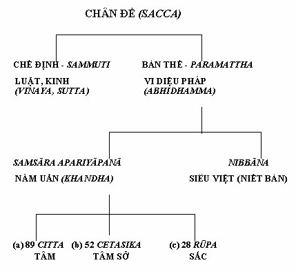
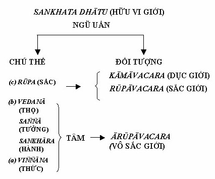
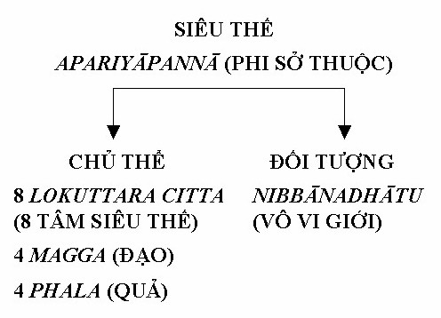
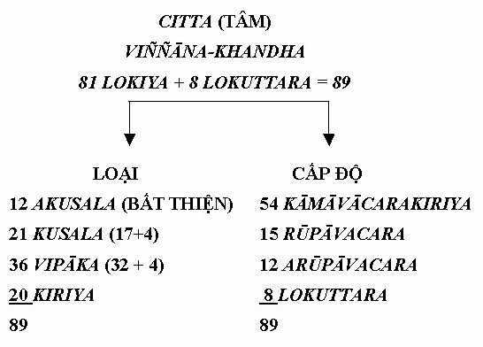
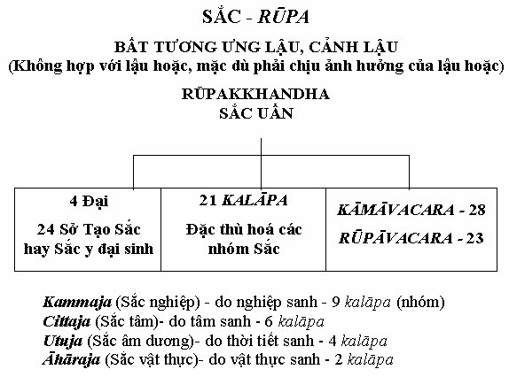
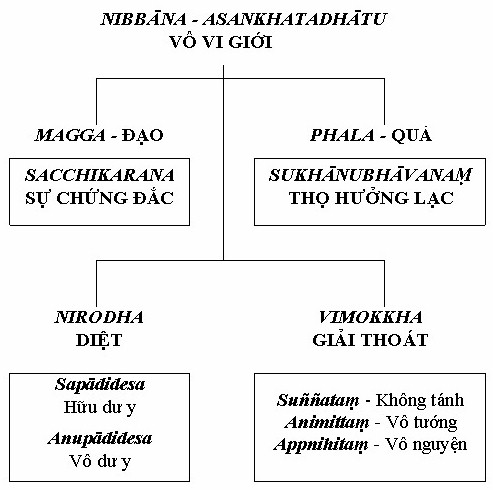

2.11 PHƯƠNG PHÁP PHÂN TÍCH I Những lời dạy của đức Phật có thể được trình bày theo hai lối rõ rệt: Dhamma (Pháp) và Abhidhamma (Vi Diệu Pháp). Pháp tiêu biểu cho một pháp môn, do chú trọng đến những thực tại theo lối kinh nghiệm, nên trình bày những lời dạy bằng ngôn ngữ chế định. Vi diệu pháp là một pháp môn, do chú trọng đến nhu cầu tháo bỏ sự tạo tác của tâm và giải thoát nó khỏi ràng buộc của luân hồi, nên trình bày những lời dạy trên quan điểm của sự thực cùng tột. Dù cho bằng lối trình bày nào chăng nữa, mục đích chính của nó vẫn là làm hiển lộ chân lý. Chân lý, theo Ðức Phật, không phải là vấn đề điều tra, mà là vấn đề kinh nghiệm. Ðẳng thức Chân Lý, hay gọi cách khác là Tứ Thánh Ðế, là cốt tử của cuộc khám phá tâm linh mà Ðức Phật đã thực hiện, bởi vậy cũng là Giáo Pháp của Ngài. Tứ Ðế hay tuệ thể nhập vào thực tại, tức là vừa tuệ tri những ràng buộc của luân hồi (Samsāra) và vừa tuệ tri sự giải thoát (Nibbāna) khỏi trói buộc ấy, về cơ bản là một kinh nghiệm tâm linh mà mỗi người đi tìm chân lý đều phải trải qua. Nó không phải một lý thuyết hay giáo điều, do đó không nên để có chút hiểu lầm nào về Chân Lý Tứ Ðế này. Bất luận ai thực hành những lời dạy của Ðức Phật trong đời sống hàng ngày bằng việc tu tập Giới, Ðịnh, Tuệ, với người ấy, sự kinh nghiệm chân lý chắc chắn sẽ trở thành hiện thực. Trước đó, có thể nó chỉ là một vấn đề thuộc về tri thức và dễ dàng nuôi dưỡng sự tự dối mình. Trên con đường tu tập, sự nhượng bộ không bao giờ dẫn đến chân lý, chỉ có sự nỗ lực cần chuyên cộng với lòng bi mẫn và khiêm tốn mới đưa ta đến đó. Những lời dạy của Ðức Phật đã được truyền trao đến chúng ta trong hình thức nguyên thủy của Phật ngôn, qua bao thế hệ các bậc Thánh và các bậc thầy chú giải nổi danh trung thành với truyền thống Thánh Ðiển Pāli thường gọi là 'Tipitaka' - Tam tạng. Chữ 'Pitaka' nghĩa đen là cái giỏ, được dùng một cách rất ý nghĩa để biểu thị cho sự 'truyền trao' hay 'chuyển tiếp' một tri kiến sống và một truyền thống thánh thiện từ thế hệ này đến thế hệ khác, cũng giống như cách người ta chuyền tay nhau những vật liệu tại công trình xây dựng vậy. Như vậy, Tipitaka (Tam tạng) là người hướng đạo đưa đến sự Giác Ngộ (Bodhi), đến sự hiện thực hóa Tứ Thánh Ðế. Tạng hay giỏ có ý nghĩa của một sưu tập những tri kiến và kinh nghiệm, có thể được sử dụng như cách dùng tấm bản đồ. Nói khác hơn, Tam tạng - Kinh, Luật, và Vi Diệu Pháp này - không giống như hình thức quyền uy của thánh thư thiên khải cần phải được tuân thủ một cách mù quáng, mà Tam tạng tạo thành những pháp môn thực tiễn, và mỗi người tìm đạo cần thực hiện trong đời sống hàng ngày với mục đích duy nhất là khám phá chân lý. Tạng Luật (Vinaya Pitaka) chủ yếu dành do hàng xuất gia. Tạng Kinh (Sutta Pitaka) chứa đựng những bài pháp do Ðức Phật thuyết qua suốt bốn mươi lăm năm thực hiện một sứ mạng vô song, cống hiến cho 'lợi ích của số đông, vì hạnh phúc của số đông (Bahujana sukhāya bahujana hitāya)'. Những bài pháp này, được diễn đạt bằng thứ ngôn ngữ bình thường trong đời sống hàng ngày, được xem là vô cùng thực tiễn và mang tính giáo huấn nhiều hơn. Giáo pháp phản ánh một trí tuệ thực sự sâu sắc và một tấm lòng bi mẫn vô biên của Ðức Phật. Trong Tạng Vi Diệu Pháp (Abhidhamma pitaka), Bậc đạo sư trình bày những lời dạy của Ngài hoàn toàn bằng những thuật ngữ triết học chứ không nhờ vào ngôn ngữ phổ thông nữa. Như vậy, Tạng Diệu Pháp hoàn toàn mang tính khách quan và khoa học bởi lẽ tạng này đã trình bày vấn đề trên quan điểm của sự thực cùng tột. Trong khi hai Tạng đầu (Kinh và Luật) tạo thành Pháp môn Pháp (Dhamma), như đã đề cập ở trên, thì Tạng cuối cùng này dùng Pháp môn Vi Diệu Pháp (Abhidhamma Pitaka) hay lối diễn đạt bằng triết lý cao sâu. Từ trước đến đây, các lậu hoặc được luận bàn theo pháp môn Pháp, như đã trình bày trong hai bản Kinh nổi tiếng: Sabbāsava Sutta (Kinh Tất Cả Lậu Hoặc) và Nibbedhika Sutta (Pháp Môn Thể Nhập Kinh). Riêng pháp môn Vi Diệu Pháp, tức là, phương pháp phân tích, khác biệt với pháp môn chế định, được trình bày trong chương sau. Bài Kinh dùng làm căn bản cho sự giới thiệu ở đây, được chọn từ bộ Dhammasangani (Bộ Pháp Tụ), bộ đầu tiên của Tạng Diệu Pháp. Tạng Diệu Pháp gồm có bảy bộ, mỗi bộ tạo thành một phương pháp học đặc thù. Riêng bộ Pháp Tụ này lại còn đưa ra ba pháp môn rõ rệt. Trong tác phẩm này, các lậu hoặc (āsava) đã được luận bàn như một đề tài đặc biệt với một tiêu đề khá ngộ nghĩnh, 'Phần Tụ Lậu' [1] - Āsavagocchaka. Phép ẩn dụ thích hợp này nhấn mạnh đến tính chất phức tạp của chủ đề, đề cập đến những hiện tượng được xem là vừa rất phổ biến lại vừa khô khan khó hiểu. Phần Tụ lậu (Āsavagocchaka) được trình bày tỉ mỉ theo hai lối rõ rệt. Ðó là Nikkhepa Kanda - Chương Toát Yếu - luận bàn y cứ trên dữ kiện ngữ nghĩa. Atthuddhāra Kanda - Chương Trích Yếu - luận bàn y cứ trên dữ kiện thuộc tâm lý. Lối đầu tiên, Nikkhepa Kanda, bao gồm việc làm sáng tỏ các nghĩa của chữ, qui chiếu chính xác với văn Kinh. Ðó là một sự phân tích thuộc về ngữ nghĩa, lột trần thực trạng của các lậu hoặc bằng những từ không mơ hồ khó hiểu. Ngược lại, ở lối thứ hai, tức Atthuddhāra kanda, bao gồm một sự giải thích cô đọng về các tâm (citta) trong đó lậu hoặc nảy sinh. Ðó là một sự phân tích có tính tâm lý đưa ra một bức tranh chân xác về các lậu hoặc. Như vậy, do lối đầu tiên là một phương pháp nhằm định nghĩa và giải thích, còn lối thứ hai là một phương pháp cô đọng có tính chất tinh túy, nên chúng được dịch lần lượt là "Chương Toát Yếu" (Chương Phân Tích) và "Chương Trích Yếu" (Chương Tóm Tắt). Ðể làm cho các đoạn trích được dể hiểu cả ở phương pháp toát yếu lẫn phương pháp trích yếu, các ghi chú đã được thêm vào dưới đề mục "dẫn giải". II PHÂN TÍCH VỀ HIỆP THẾ (LOKIYA) VÀ SIÊU THẾ (LOKUTTARA)  Ðức Phật dạy đạo vừa bằng ngôn ngữ thông thường của người thế tục, vừa bằng những thuật ngữ của giới triết gia. Các Tạng Kinh và Luật, sử dụng ngôn ngữ chế định hay quy ước, trong khi Tạng Vi Diệu Pháp thì bằng những từ ngữ hoàn toàn không ngôi thứ và khách quan. Vi Diệu Pháp mô tả sinh động vòng luân hồi (samsāra) - các chúng sanh và thế gian - dưới dạng tập hợp của các hiện tượng (Hữu vi pháp), còn Siêu Thế như là Vô Vi Giới (Nibbāna). Samsāra (luân hồi) là hữu vi, do đó là chiều kích của sự bất toàn và trói buộc. Nibbāna là vô vi, do đó là chiều kích của sự giải thoát. Samsāra có thể được rút gọn lại vào các tập hợp tâm - vật lý, nghĩa là, citta, cetasika và rūpa hay tâm, tâm sở và sắc pháp. Có tất cả 89 tâm, cùng với 52 tâm sở tạo thành Danh (phần tinh thần). Có 28 sắc, cả bên trong lẫn bên ngoài, tạo thành Sắc (phần vật chất). Về cơ bản, toàn thể vũ trụ này, tức là tất cả mọi hiện hữu, từ trạng thái thô thiển nhất đến những trạng thái đã được phát triển cùng tột của sự tiến hóa, đều bao gồm trong những hoán đổi khác nhau và những kết hợp khác nhau của 169 yếu tố căn bản của hiện hữu này (89 tâm + 52 tâm sở + 28 sắc pháp). Nibbāna là siêu nghiệm, là vô vi, biểu thị cho sự giải thoát; mặc dù hoàn toàn khẳng định như vậy, Niết Bàn vẫn không thể được định nghĩa dưới dạng bốn phạm trù logic - có, không, vừa có vừa không, và không phải có cũng không phải không.  Tất cả mọi hiện tượng (các pháp hữu vi) về cơ bản có thể được rút gọn lại vào ngũ uẩn (Khandha) tiêu biểu cho sự hiện hữu vừa chủ thể (hữu cơ) lẫn đối tượng (vô cơ). Về phương diện chủ thể, ngũ uẩn bao gồm sự kết hợp tâm - sinh vật lý được coi như một chúng sanh - chư thiên, người, vật, côn trùng, v.v... Theo thuật ngữ thì sự kết hợp này được gọi là "Nāma-Rūpa" (Danh-Sắc). Có ba cấp độ hiện hữu gọi theo Pāli là "Āvacara" hay "Loka". Loka là thế giới bên ngoài, trong đó một chúng sanh cư trú. Như vậy, cả chúng sanh và thế gian này đều phụ tùy lẫn nhau và bất khả phân, biểu thị cho duyên khởi tánh, hay gọi cách khác là sự ràng buộc. Ngũ uẩn cũng còn được sắp dưới dạng Tâm, Tâm sở và Sắc.  Apariyāpannā (phi sở thuộc) biểu thị cho những gì đã vượt ra ngoài sự hiện hữu thế gian, do đó vượt lên trên mọi sự ràng buộc và hệ lụy trong Nghiệp và Tái sanh. Apariyāpannā - phi sở thuộc -cũng còn được gọi là Lokuttara (Siêu Thế), bao gồm tám Ðạo Quả Tuệ Siêu Thế, được chủ thể đạt đến, và Niết Bàn là đối tượng của những tuệ này. Tám Tâm Siêu Thế (Lokuttara Citta) có quan hệ với Ðịnh (Samadhi) thuộc về năm Tâm Sắc Giới (Rūpavacara).  Có hai loại Tâm rõ rệt, đó là tâm hiệp thế và tâm siêu thế. Trong khi tâm hiệp thế tiêu biểu cho hữu vi pháp, tức là còn nằm trong sự thống trị của các lậu hoặc, do đó còn bị ràng buộc và trở thành (tái sanh) bất tận, thì tâm siêu thế thuộc về chiều kích của siêu việt, một trạng thái đã được chuyển hoá và hoàn toàn vượt qua tầm ảnh hưởng của các lậu hoặc, cũng như vượt qua cái vòng luẩn quẩn của sanh tử luân hồi (samsāra). Dưới dạng bản chất nội tại của nó, 81 tâm hiệp thế thuộc về bốn loại khác nhau, bất thiện tâm (akusala), gốc tham, sân, và si; Thiện tâm (kusala), gốc vô tham, vô sân, và vô si; Vô ký tâm (abyākatā), bao gồm các tâm quả (vipāka) và duy tác (kriya). Chúng được gọi là vô ký (abyākatā) bởi lẽ nó chẳng phải thiện cũng chẳng phải bất thiện, mà chỉ là quả của những tâm thiện và bất thiện ấy, Pāli gọi là vipāka, cũng như nó thuần túy thuộc về chức năng (duy tác), không phải thiện cũng không phải ác, cũng chẳng phải là quả của những tâm này. Do đó, thiện, ác, tốt, xấu ở đây không phải là những khái niệm quy ước nữa, mà là những thực tại tâm lý. Như vậy, trong đạo Phật, luân lý và đạo đức y cứ trên những giá trị cùng tột (Paramattha), chứ không dựa trên sự sáng tạo của quy ước, kinh điển, luật học hay những chế tác đại loại như vậy. Những căn tham, sân, si và vô tham, vô sân, vô si là những yếu tố thúc đẩy con người hành động. Dưới dạng các mức độ hoàn thiện, một lần nữa tâm được xếp thành bốn loại, đó là, Tam giới (dục giới, sắc giới, và vô sắc giới) và Siêu Thế.
TÁM TÂM CĂN THAM 1) Ðồng sanh với hỷ, hợp với tà kiến - vô trợ. (Somanassasahagataṃ diṭṭhigatasampayuttaṃ asankhārikaṃ) 2) Ðồng sanh với hỷ, hợp với tà kiến - hữu trợ. (Somanassasahagataṃ diṭṭhigatasampayuttaṃ sasankhārikaṃ) 3) Ðồng sanh với hỷ, không hợp với tà kiến - vô trợ. (Somanassasahagataṃ diṭṭhigatavippayuttaṃ asankhārikaṃ) 4) Ðồng sanh với hỷ, không hợp với tà kiến - hữu trợ. (Somanassasahagataṃ diṭṭhigatavippayuttaṃ sasankhārikaṃ) 5) Ðồng sanh với xả, hợp với tà kiến - vô trợ. (Upekkhāsahagataṃ diṭṭhigatasampayuttaṃ asankhārikaṃ) 6) Ðồng sanh với xả, hợp với tà kiến - hữu trợ. (Upekkhāsahagataṃ diṭṭhigatasampayuttaṃ sasankhārikaṃ) 7) Ðồng sanh với xả, không hợp với tà kiến - vô trợ. (Upekkhāsahagataṃ diṭṭhigatavippayuttaṃ asankhārikaṃ) 8) Ðồng sanh với xả, không hợp với tà kiến - hữu trợ. (Upekkhāsahagatam diṭṭhigatavippayuttaṃ sasankhārikaṃ) HAI TÂM CĂN SÂN (DOSA -MŪLIKA) 1) Ðồng sanh với ưu, hợp phẫn, vô trợ. (Domanassasahagataṃ patighasampayuttaṃ asankhārikaṃ) 2) Ðồng sanh với ưu, hợp phẫn, hữu trợ. (Domanassasahagataṃ patighasampayuttaṃ sasankhārikaṃ) HAI TÂM CĂN SI (MOHA - MŪLIKA) 1) Ðồng sanh với xả, hợp với hoài nghi. (Upekkhāsahagataṃ vicikicchāsampayuttaṃ) 2) Ðồng sanh với xả, hợp với phóng dật. (Upekkhāsahagataṃ uddhaccasampayuttaṃ) 3) Những tâm bất thiện, mặc dù được định rõ bằng các nhân (hetu), cũng cần phải được hiểu dưới dạng các lậu hoặc để có một sự nắm bắt rõ ràng hơn về các hiện tượng ác hay phi công đức này. Những tâm căn tham, đi kèm với ngã mạn và tà kiến, nuôi dưỡng hữu lậu (bhavāsava) và kiến lậu (diṭṭhhāsava), trong khi dục lậu (kāmāsava) có mặt trong tất cả tám tâm căn tham (lobha - mulika). Vô minh lậu (Avijjāsava) được xem là yếu tố chung trong tất cả mười hai tâm bất thiện. 4) Ðiều lý thú đáng ghi nhận ở đây là trong khi sân (dosa) là một nhân (hetu), nó vẫn không phải là một lậu hoặc (āsava), không giống như hai nhân kia, tham (lobha), là dục lậu và si (moha) là vô minh lậu, như vậy chúng vừa là nhân vừa là lậu hoặc. Trong khi tham và si tạo thành cặp song sinh ngay từ buổi ban đầu mà, tựa như một con sông chảy quanh năm, nó duy trì sự trôi chảy của dòng tương tục tâm - vật lý gọi là cuộc đời này, thì sân (dosa), tựa như một loại loạn trí nhất thời, là một sự bất thường, một sự vi phạm. Giống như lửa, sân bùng lên rồi hạ xuống, đốt sạch cái nhiên liệu đã nuôi dưỡng nó. Nó không cho phép cái gì có tính liên tục, không giống như tham và si, được biểu thị bằng đặc tính tự nuôi dưỡng. Ở đây có thể dùng một hình ảnh tương tự của thời nay cho dễ hiểu hơn, Lobha (tham) và Moha (si) có một cơ chế hằng định nội soi [2], một hệ thống hoàn ngược, với một sự vận hành có khả năng tự sanh và tự điều chỉnh. Như vậy, việc nghiên cứu các lậu hoặc này sẽ tạo cho ta một khả năng hiểu biết kỳ diệu vào những vận hành của tâm. Nói khác hơn, vì lẽ các nhân - tham và si - tạo thành phương diện thụ động của cá nhân như những đặc điểm nhân tính (vipāka: quaû), tác động ngược lại trên các nhân ấy (Tanhā = kāmasava vā avijjāsava), tạo thành phương diện tích cực như những mô thức tác nghiệp hiện tại, như vậy một cơ chế hoàn ngược đã được thiết lập, bảo đảm cho một dòng luân lưu miên viễn của các lậu hoặc. Bởi lẽ sân (dosa) không thiết lập một hệ thống hoàn ngược do chức năng bất thường (lúc có lúc không) của nó, nên nó không tác hành như một dòng chảy, một chất thải như trong trường hợp của một lậu hoặc. Trong một thế giới lưỡng phân, dĩ nhiên luôn luôn phải có một khuynh hướng để cho tâm dao động giữa những đối cực. Ðó là lý do tại sao một tâm căn tham lại có khuynh hướng dao động sang một cực khác, tức là chuyển thành tâm căn sân. Trong kinh nghiệm sống hàng ngày, sự kiện này rất dễ nhận ra. Nếu ta muốn một điều gì và điều đó không được mãn nguyện, thất vọng sẽ khởi lên, phẫn nộ sẽ tăng nhanh và một số những cảm xúc không thiện cảm khác sẽ phát sanh. Yếu tố liên kết chung giữa hai điều kiện tâm lý cực đoan này là si mê - moha. Về cơ bản, mô thức biến chuyển này là mảnh đất cho những bất thiện tâm, đặc biệt là các lậu hoặc sanh trưởng và tồn tại mãi mãi. KUSALĀBYĀKATA - TÂM THIỆN VÀ VÔ KÝ BẤT TƯƠNG ƯNG LẬU HOẶC
Bộ Pháp Tụ (Dhammasangani) gồm có một bảng liệt kê các Pháp (Dhamma) - hiệp thế lẫn siêu thế - hợp theo mẫu Ðề Tam và mẫu Ðề Nhị (Tika Mātika và Duka Mātika). Ðề đầu tiên của tam đề gọi là kusalatika (đề thiện). Ðó là một sự sắp xếp theo đó, các pháp - hiệp thế và siêu thế - được phân tích dưới ba đề mục: Kusala (thiện), Akusala (bất thiện) vā Abyākata (vô ký). Abyākata gồm các tâm quả và duy tác, sắc pháp và Niết Bàn (vipāka và kriyā citta, rūpa và nibbāna). Ở trên, các bất thiện tâm (akusala citta) đã được đề cập. Phần này chỉ bàn về các Tâm Thiện và Tâm Vô Ký. Có tất cả 21 tâm thiện (xem sơ đồ) thuộc Tam Giới và Siêu Thế. Siêu Thế ở đây bao gồm bốn Ðạo và bốn Quả. Có hai loại tâm thiện rõ rệt; một loại gọi là Ñānavippayutta (không hợp với trí), và loại kia là Ñānasampayutta (hợp với trí). Loại không hợp với trí gồm bốn tâm thiện dục giới (kāmāvacara), và loại hợp trí gồm mười bảy tâm còn lại. Vấn đề chỉ có bốn tâm thiện không hợp với trí này cũng là một điểm quan trọng; vì cái thiện tự nó, không phải trí tuệ, mà chỉ có nghĩa là sự kéo dài thêm mãi của tiến trình Dục (kāma), mà cũng có nghĩa là kéo dài thêm vòng luân hồi (samsāra), ở mức thấp nhất là duhetuka (nhị nhân). Nghĩa là, tái sanh giữa hạng người và A-tu-la (asura) không tiến hóa. Suy cho cùng, thiện (kusala) cũng có nghĩa là Nghiệp (kamma). Trừ khi nó bắt nguồn từ các tăng thượng tuệ, bằng không thiện nghiệp cũng không thể giúp người ta tiến hóa trên con đường siêu việt các Nghiệp, như cách các tâm thiện Siêu thế (lokuttara kasala) làm. Chín tâm sắc giới và vô sắc giới muốn ám chỉ đến các tâm thiền (jhāna), mà ngay cả một chúng sanh Dục giới vẫn có thể tu tập. Những tâm đại hành của Ðịnh này tương ứng với tâm của các vị Phạm Thiên, như được biểu trưng bằng các tâm quả sắc giới và vô sắc giới (rūpavacara vā Arūpavacara vipāka). Năm tâm thiền sắc giới cũng tạo thành nền tảng cần thiết cho sự khởi sanh của tám tâm Siêu Thế. Khi các tâm thiền này kết hợp với Siêu Thế, chúng trở thành chỗ trụ vững chắc cho Siêu Thế (lokuttara - pādaka). Do đó tám Siêu Thế Tâm, dưới dạng ngũ thiền, trở thành bốn mươi (8x5=40). Như vậy tám mươi chín tâm, khi tính theo cách này trở thành một trăm hai mốt tâm (lokiya 81 + lokuttara 40 = 121). Tám tâm Siêu Thế khởi lên với Niết Bàn như là đối tượng của chúng, không giống như 69 tâm kia (77 - 8 = 69) thuộc tam giới, có những đối tượng hiệp thế khác nhau tương ứng với sáu căn tức là, sắc, thinh, hương, v.v... Năm mươi sáu tâm vô ký (abyākata) được chia làm ba mươi sáu tâm quả (vipāka citta) và hai mươi tâm duy tác (kriya citta). Bốn tâm quả Siêu Thế tức là bốn quả của tuệ (Phala citta) hay gọi cách khác là sa môn quả (sāmañña phalāni) được tích tập bằng sự toàn bích tinh thần và nỗ lực cá nhân của con người. Trong số hai mươi ba tâm quả, mười lăm tâm được xem là vô nhân (ahetuka) và tám tâm còn lại là hữu nhân (sahetuka). Quả ở đây tiêu biểu cho những trạng thái tiềm thức. Chúng tạo thành lớp tiềm thức gọi là dòng hữu phần (Bhavanga), với kiết sanh thức (Patisandhi) và tử tâm (cuti) tạo thành hai đầu của một dòng đời. Các tâm quả vô nhân (ahetuka vipāka) cũng thực hiện những vai trò quan trọng khác mà thuật ngữ gọi là Vithi citta - Lộ Tâm (nghĩa đen là những chặng trên lộ trình tâm) như là nhãn thức tâm, nhĩ thức tâm, v.v..., tiếp thọ tâm, quan sát tâm và phân đoán tâm. Như vậy, ngoài việc hình thành nhân cách của một con người ra, một tâm, phần lớn còn được tạo điều kiện bởi những tiến trình tâm quả tiềm thức này. Trong hai mươi tâm duy tác (kriya citta), mười tám tâm tiêu biểu cho tâm của Bậc Lậu Tận (khināsava) tức Bậc A-la-hán. Hai tâm còn lại là ngũ môn hướng tâm (Panñcadvārāvajjanacittaṃ) và ý môn hướng tâm (Manodvāravajjanacittaṃ). Trong mười tám tâm duy tác của Bậc A-la-hán, có một tâm được gọi là hasituppāda (tiếu sanh tâm) - Tâm kết hợp với sự mỉm cười của Bậc A-la-hán, đây là một tâm vô nhân (ahetuka). Tâm đặc biệt này phản ánh nét mặt hân hoan tự nhiên, không miễn cưỡng, một vầng hào quang sáng chói của vị A-la-hán. Mặc dầu Bậc Thánh A-la-hán đã thoát khỏi những ràng buộc của luân hồi, các Ngài vẫn sống cuộc sống hàng ngày như bất cứ một người bình thường nào, tất cả chỉ vì lợi ích của thế gian. Bởi lẽ các Ngài không thể phạm vào bất kỳ một nghiệp nào, nên tâm duy tác của các Ngài cũng tương ứng với tám tâm thiện dục giới (kāmavacara kusala citta), điều này có nghĩa là các Ngài vẫn có những tâm bất tương ưng trí (ñānavipayutta) khởi lên trong tâm thức. Tuy nhiên, cái khác giữa tâm ly trí (bất tương ưng trí) của phàm phu và của Bậc A-la-hán là ở chỗ, tâm ly trí của Bậc A-la-hán biểu lộ những hoạt động được thực hiện một cách bình thường không có chủ tâm hoặc chỉ được thực hiện một cách máy móc theo cơ tánh; tức là, như một phận sự thường ngày như đại tiểu tiện, tắm rửa, v.v... Mỗi khi làm một việc tầm thường gì, các vị A-la-hán không cần mất thời gian để tập trung suy nghĩ, do đó không cần dùng trí đối với một vài công việc; sự kiện này được biểu hiện bằng tâm duy tác ly trí (Ñānavipayutta kriyā citta). Ví như một lực sĩ khỏe mạnh, khi làm những công việc nhỏ nhặt thường nhật, đâu cần phải vận dụng đến cái sức mạnh lực sĩ của mình vậy. Tuy nhiên không thể nói những tâm duy tác ly trí ấy là thiếu chánh niệm. Riêng 18 tâm vô nhân thì không có cả niệm và trí. Ngoài ra, bậc A-la-hán vẫn còn chịu ảnh hưởng bởi những thói quen gọi là tiền khiên tật, tức thường cận y duyên (pakatūpanissaya paccayo) không phải thiện hay bất thiện mà chỉ là duy tác (kiriyā). CETASIKA - TÂM SỞ CÙNG HIỆN HỮU VỚI TÂM
52 tâm sở (cetasika) là những yếu tố đi kèm của tâm, những yếu tố này sanh và diệt cùng với tâm, có cùng đối tượng và nương cùng một căn với tâm - "ekuppāda, ekanirodha, ekālambana, vatthukā". Nói khác hơn, tâm sở là những yếu tố đồng hiện hữu của tâm, được xây dựng bằng cùng chất liệu như tâm, có thể nói là vậy. Nhằm mục đích hiểu, mặc dù điều quan trọng vẫn là phải phân tích chúng, nhận dạng chúng và thâm nhập vào những chức năng riêng biệt của nó, tuy nhiên, như một thành phần đồng tồn tại với tâm, các tâm sở không thể tách rời khỏi tâm được. Có ba loại tâm sở rất rõ rệt là Tâm Sở Tợ Tha, Tâm Sở Bất Thiện và Tâm Sở Tịnh Hảo. Những tâm sở tợ tha (aññasamana) được chia thành hai loại: Biến Hành và Biệt Cảnh. 7 tâm sở biến hành được xem là những tâm sở rất cơ bản đến độ chúng hiện hữu trong tất cả tám mươi chín tâm, kể cả mười tâm quả ngũ song thức thuần tịnh (dvepanñcaviññāna). 6 tâm sở biệt cảnh lại khác. Chúng luôn luôn vắng mặt trong mười tâm ngũ song thức. Có rất nhiều tâm trong đó một số biệt cảnh tâm sở này không có mặt. Trong 14 bất thiện tâm sở, 4 là biến hành bất thiện, tức là chung cho tất cả 12 tâm bất thiện. 4 biến hành bất thiện tâm sở này là: Si (moha), Vô tàm (ahirika), Vô quý (anottappa) và Phóng dật (uddhacca). Tham (lobha), Tà kiến (diṭṭhi) và Ngã mạn (māna) là những sỡ hữu thuộc tham phần, có mặt trong 8 tâm căn tham. Sân (dosa), tật (issa), lận (macchariyam) và hối (kukkucca) thuộc về sân phần, đi kèm với 2 tâm căn sân. Hôn trầm (thīna) và thụy miên (middha) sanh trong các tâm hữu trợ (sasankhārika). Si hoài nghi (vicikicchā) và si phóng dật (uddhacca) kết hợp với các tâm căn si (moha-mūlika). Ở đây chúng ta sẽ thấy rằng trong 14 tâm sở này, tham (lobha), tà kiến (diṭṭhi), và si (moha) là 3 tâm sở trở thành các lậu hoặc (āsava), nghĩa là sở hữu tham trở thành dục lậu (kāmāsava) và hữu lậu (bhavāsava), si (moha) trở thành vô minh lậu (avijjāsava), và sở hữu tà kiến trở thành kiến lậu (diṭṭhāsava). Như vậy, 10 bất thiện tâm sở còn lại và 12 bất thiện tâm là những đồng minh của lậu hoặc. Hay nói khác hơn, do vận hành phối hợp với các lậu hoặc, nghĩa là các lậu hoặc cung cấp môi trường bẩm sinh của nó cho chúng, mà những tâm bất thiện và 10 sở hữu này trở thành môi trường tự nhiên và nơi lai vãng của các lậu hoặc. 19 trong số 25 tịnh hảo tâm sở là chung hay biến hành cho tất cả các tâm thiện (sabba kusala sādhārana). 3 tiết chế tâm sở (virati cetasika) luôn luôn có mặt trong 8 tâm Siêu Thế. Chúng cũng được thấy riêng lẻ trong 8 tâm đại thiện dục giới (kāmāvacara kusala citta). 2 sở hữu vô lượng phần (appamaññā cetasika) bi và hỷ được thấy riêng lẻ trong 4 tâm thiền đầu của sắc giới (rūpāvacara jhāna citta), cũng như trong những tâm thiện dục giới (kāmāvacara kusala citta) và duy tác hữu nhân (sahetuka kriyā). Tâm sở trí tuệ sanh trong tất cả các tâm tịnh hảo hợp trí (nñānasampayutta sobhana citta) thuộc Tam Giới và Siêu Thế. Chính trí tuệ này tác hành như một loại vũ khí chắc chắn cho sự đoạn trừ của tất cả các lậu hoặc, mặc dù alobha (vô tham), được xem như đối nghịch của dục (kāma), phản công cả dục lậu (kāmāsava) lẫn hữu lậu (bhavāsava). Trí tuệ (paññā), được xem như vô si (amoha) và chánh kiến (sammādiṭṭhi), không chỉ bứng gốc những đối nghịch của nó, tức vô minh lậu và kiến lậu, mà nó còn tiêu diệt luôn cả dục lậu và hữu lậu, những lậu hoặc đã bị vô tham (alobha) phản công và làm cho muội lược nữa. 19 tịnh hảo tâm sở, kể cả vô tham, chung cho tất cả các tâm tịnh hảo (sobhana citta), khiến cho một tâm thiện trở nên mạnh mẽ hơn một tâm ác. Ðó là lý do tại sao thiện, như một năng lực tích cực, luôn luôn có được thế thượng phong hơn. Cái ác dù cho có vẻ hùng mạnh đến đâu chăng nữa cũng không thể nào chống cự nổi với cái thiện, chính là do tính năng động của tâm, như chúng ta đã thấy trong sự vận hành của phức hợp Tâm - Tâm Sở ở trên.  Cittaṃ, cetasikaṃ, rūpaṃ,
Nibbānaṃ, Pháp chân đế chia ra bốn
loại, Chúng ta đã đề cập đến Tâm và Tâm Sở. Ở đây, Sắc Uẩn sẽ được phân tích tóm tắt. Có tất cả 28 loại sắc; trong đó 4 sắc thường được gọi là tứ đại chủng (Mahābhūta), và 24 sắc còn lại là sắc phụ thuộc hay sắc y đại sinh. 28 loại sắc này, kể cả tứ đại và y đại sinh, bao hàm mọi thứ trong thế giới vật chất này, tức là trong mọi hình thái có thể nhận thức được, hữu tình hay vô tình, thô hoặc tế, vật lý hay hóa học, khối lượng hay năng lượng, hữu hình hay vô hình, cứng, lỏng, khí, nhiệt, ánh sáng, điện, từ trường, phân tử, sóng, sắc, thinh, hương, vị, xúc, dưỡng chất, mạng căn, v.v... Dưới dạng cảnh giới sinh tồn, sắc (rūpa) thuộc về kāmāvacara (dục giới) lẫn rūpāvacara (sắc giới). Trong khi Dục giới có đủ hai mươi tám sắc, thì sắc giới chỉ có hai mươi ba. Sở dĩ có điều này là vì sắc giới không có một số căn như khứu giác, vị giác, xúc giác, nam tánh, nữ tánh. Như Luận nói, mặc dù hai mươi ba sắc này được xem là hiện hữu ở cõi sắc giới (rūpāvacara), chúng vẫn thuộc Dục giới (kāmāvacara). Nói một cách khác, chúng chỉ là những sự mở rộng có tính siêu thoát của các sắc Dục giới. Về sự tương quan giữa tâm và thân (sắc) này, có một quan niệm vô cùng sai lầm cần phải được làm cho sáng tỏ. Ðối với các nhà trí thức thiên về vật chất - có thể đó là một khoa học gia, kỹ thuật gia hay tư tưởng gia, v.v..., cố gắng chứng minh rằng tâm, suy cho cùng, cũng chỉ là hình thức tinh tế của vật chất hoặc có lẽ là một hình thức năng lượng nào đó của vật chất mà thôi. Thực không thể có nhận thức nào nhầm lẫn hơn vậy! Dù cho các nhà trí thức này có thông minh đến đâu chăng nữa, chắc chắn họ cũng không thể thông suốt hết mọi sự việc, nhất là khi cố gắng làm ra vẻ mình biết hết những vấn đề mà thực tình họ không biết rõ, như sự quả quyết của họ rằng tâm chỉ là vật chất trong hình thức năng lượng, thì chẳng kém gì một sự võ đoán, một điều gì đó phản khoa học. Theo đạo Phật, tâm và sắc (vật chất) là hai yếu tố rất khác biệt và hoàn toàn không giống nhau, mặc dầu đôi lúc chúng tương tác và tùy thuộc hỗ tương lẫn nhau dưới những trường hợp nhất định nào đó. Trong khi sắc (rūpa) là vô nhân (ahetuka), không có sự thúc đẩy, không có các thọ, tưởng, v.v... thì tâm lại không vậy. Ngoại trừ 18 tâm vô nhân, tức những tâm này không có 6 nhân tương ưng: tham, sân, si, vô tham, vô sân, vô si. Dĩ nhiên chúng chỉ được xem là vô nhân theo nghĩa ấy mà thôi, tâm luôn luôn được đi kèm bởi thọ, tưởng, hành, không giống như sắc. Bốn đại chủng (Mahābhūta) còn được phân chia thêm thành tám loại sắc căn bản, gọi là sudatthaka - thuần bát pháp, tức là đất (pathavi), nước (āpa), lửa (tejo), gió (vāyo), màu sắc (vanna), khí (gandha), vị (rasa), vật thực (oja). Khi tám loại sắc căn bản này kết hợp với các sắc phụ thuộc hay sắc y sinh khác, chúng được gọi là những bọn sắc (kalāpa). Có tất cả hai mươi mốt bọn sắc do các hiện tượng khác nhau, như nghiệp (kamma), tâm (citta), thời tiết và vật thực sanh. Bốn đơn vị sắc đặc thù này, tức là kammaja (do nghiệp sanh), cittaja (do tâm sanh), utuja (do thời tiết sanh) và āhāraja (do vật thực sanh), gồm hai mươi mốt loại, hình thành sắc uẩn (rūpakhandha) của cá thể con người. Về số lượng, sắc do nghiệp sanh (kammaja rūpa) gồm có 18 loại, do tâm sanh (cittaja) gồm 15 loại, do thời tiết sanh (utuja) gồm 13 loại, và do vật thực sanh (āhārāja) gồm 12 loại. Nói một cách khác, thân người là một sự tập hợp và hoán đổi khác nhau của 58 loại sắc này, biểu hiện cái gọi là cá nhân con người, và chính do cấu trúc phức tạp này mà nó dễ bị thương tổn, hư hỏng và trục trặc. Trong Abhidhammatthasangaha (Vi Diệu Pháp Yếu Nghĩa) có nói rằng, cùng với sự khởi sanh của kiết sanh thức, các bọn sắc nghiệp cũng khởi lên đồng thời do chính năng lực của nghiệp (kamma). Tiếp theo đó, vào sát na tâm thứ hai, các sắc tâm (cittaja) khởi lên. Khi phức hợp tâm - sắc đã được thiết lập như vậy, sắc thời tiết cũng sanh lên. Và từ khi dưỡng chất được hấp thụ vào do người mẹ mang thai, các sắc vật thực cũng sanh lên. Như vậy, giống như một ngọn lửa hay một con sông được cung cấp nhiên liệu liên tục, tính tương tục của cá nhân cũng được duy trì như vậy cho đến lúc chết do sự tương tục không gián đoạn của bốn bọn sắc này. Khi mạng chung, các sắc nghiệp diệt cùng với tử tâm, sau đó lần lượt các sắc tâm và vật thực cũng diệt. Riêng các sắc thời tiết còn tiếp tục cho đến khi tử thi phân hủy. Như vậy, tình trạng vô cùng phức tạp này là do những kết hợp và hoán vị của hai mươi tám sắc tứ đại và y đại sinh, trong một trạng thái thay đổi liên tục, tạo thành là phương diện hữu cơ (indriya - baddha: căn phược) của sắc uẩn. Các sắc vô cơ cũng tạo thành một dòng tương tục như vậy nhưng không đến nỗi phức tạp, bởi vì sự vắng mặt của yếu tố tâm lý hỗ tương. Do tính chất đa hợp ấy mà sắc được xem là duyên hợp (hữu vi) và, như đối tượng của các tâm bất thiện, nó phải chịu ảnh hưởng của các lậu hoặc, mặc dù trên thực tế, sắc bất tương ưng (không hợp) và tách rời khỏi các lậu hoặc (āsava).  Trong Ðạo Phật, mục tiêu của mọi nỗ lực tinh thần là Niết Bàn. Thánh Ðế Thứ Tư, hay còn gọi là Ðạo Diệt Khổ Thánh Ðế, tiêu biểu cho tất cả mọi nỗ lực tinh thần này, và Thánh Ðế Thứ Ba tức Diệt Ðế tiêu biểu cho mục tiêu. Thánh Ðế Thứ Nhất và Thứ Nhì là Khổ và Tập Khởi của Khổ, tượng trưng cho luân hồi, hay sự hiện hữu của mọi hệ lụy. Nói một cách khác, Tứ Thánh Ðế mà Ðức Phật đã khám phá và vì lòng bi mẫn tuyên thuyết cho tất cả chúng sanh này thể hiện những chân lý cùng tột (paramattha sacca: đệ nhất nghĩa đế). Niết Bàn được gọi là Vô Vi Giới (Āsankhata Dhātu), chiều kích của giải thoát, để nói lên cái đặc tính tích cực của nó. Sự diệt hữu ở đây không có nghĩa là sự hủy diệt hay tan biến thành hư không. Bất cứ những gì được tạo tác (hữu vi) và cấu hợp đều biểu thị sự ràng buộc, bất toàn và bất toại nguyện, do đó dứt khoát là tiêu cực. Ngược lại, vô vi (pháp không do điều kiện tạo thành) thể hiện sự tự do, giải thoát, toàn bích, do đó là tuyệt đối tích cực. Do tính chất tích cực và tối tôn đó mà Vô vi được xem là mục tiêu tối thượng và chơn chánh của Ðạo Phật. Như vậy, Niết Bàn là đối tượng của các tâm siêu thế, làm chuyển hóa nhân cách. Mặc dù Niết Bàn là đối tượng của cả tâm đạo lẫn tâm quả, song các đạo - quả tâm (magga - phala citta) này có những phận sự rất khác nhau. Các tâm đạo là những công cụ nhờ đó Niết Bàn được chứng ngộ (sacchikatabbam), trong khi các tâm quả là những trạng thái an định cao quý, nhờ đó hương vị an lạc của Niết Bàn được cảm nghiệm, được nếm và được thọ hưởng. Nói khác hơn, trong khi đạo (magga) cho phép hành giả thủ đắc, thì quả (phala) giúp hành giả hưởng cái thủ đắc ấy. Ðạo tựa như bàn tay vươn ra để nhận pháp vị, trong khi quả cho phép hành giả thưởng thức trọn vẹn hạnh phúc của pháp vị ấy. Sự chứng ngộ Niết Bàn có hai loại rõ rệt. Một, saupādisesa (Hữu Dư Y Niết Bàn), với sự kết hợp tâm - vật lý gọi là đời sống vẫn còn nguyên vẹn, và loại kia, không còn các uẩn, tức là vào lúc diệt của kiếp sống, như khi vị A-la-hán nhập diệt (parinibbāna). Nói khác hơn, bao lâu vị A-la-hán còn sống, vị ấy sống trong sự hưởng thụ hạnh phúc của giải thoát và là một mẫu mực cho mọi người noi theo để cùng đạt được như vậy. Với hình thức chứng ngộ Niết Bàn này, tức Hữu Dư Y Niết Bàn, các vị A-la-hán sống hoàn toàn vì lợi ích của thế gian. Sự thọ hưởng hương vị giải thoát qua samādhi - tức là các thiền sắc giới (rūpavacara jhāna) phát sinh do sự chứng nghiệm Niết Bàn dưới ba hình thức rõ rệt: không, vô tướng và vô nguyện. Niết Bàn là không còn các lậu hoặc. Nó cũng giống như hưởng được cái không khí trong lành, hiếm hoi, không có sự ô nhiễm vậy. Niết Bàn là không còn mọi tạo tác (hữu vi), nghĩa đen là các tướng hay hình ảnh; hữu vi biểu thị cho sự thay đổi, khổ và hệ lụy. Do đó, sự giải thoát khỏi những thứ này là an lạc trường cửu. Niết Bàn là không còn mọi ước nguyện, vì đã thoát khỏi mọi tham đắm và khổ đau kèm theo nó, thoát khỏi mọi lao nhọc và đấu tranh. Như vậy, sự giải thoát khỏi tham ái tượng trưng cho hình thức cao nhất của an lạc và hạnh phúc. Sự cảm nghiệm ba đức đặc biệt của Niết Bàn này được tạo ra bởi sự phát triển và hoàn thiện các tuệ thể nhập vào vô thường (anicca), khổ (dukkha) và vô ngã (anatta) biểu thị đặc tính của chiều kích trói buộc (samsāra). Như vậy Nibbàna được gọi là anàsava (vô lậu), chiều kích không còn các lậu hoặc của vô vi giới. Trong Udāna, Niết Bàn được mô tả như sau: "Quả thực, này các Tỳ khưu, có cái không sanh, không hiện hữu, không bị làm, không hữu vi. Này các Tỳ khưu, nếu không có cái không sanh, không hiện hữu, không bị làm, không hữu vi này thì ở đây không thể trình bày sự xuất ly khỏi sanh, hiện hữu, bị làm, hữu vi. Vì rằng, này các Tỳ khưu, có cái không sanh, không hiện hữu, không bị làm, không hữu vi nên có trình bày sự xuất ly khỏi sanh, hiện hữu, bị làm, hữu vi". [1] Āsavagocchakam (Tụ Lậu) tức là phần gom các đề tài liên kết nhau nói chung quanh các vấn đề lậu hoặc (Chú thích của Hoà Thượng Tịnh Sự). [2] Homeostasis: tiến trình sinh lý học trong cơ thể trong đó các hệ bên trong nó (như huyết áp, thân nhiệt) được giữ ở mức cân bằng, bất kể các thay đổi từ bên ngoài. -ooOoo- |
|||||||||||||||||||||||||||||||||||||||||||